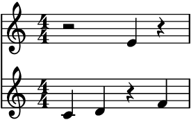
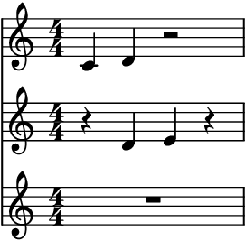

auxjad.Hocketer¶
-
class
auxjad.Hocketer(contents: abjad.core.Container.Container, *, n_voices: int = 2, weights: Optional[list] = None, k: int = 1, force_k_voices: bool = False, disable_rewrite_meter: bool = False, use_multimeasure_rests: bool = True, omit_time_signatures: bool = False, boundary_depth: Optional[int] = None, maximum_dot_count: Optional[int] = None, rewrite_tuplets: bool = True)¶ Hocketer is a hocket generator. It takes an input
abjad.Containerand randomly distribute its logical ties among different staves, filling the empty durations with rests.Calling the object will return a tuple of
abjad.Staffgenerated by the hocket process and ready to be assigned to anabjad.Score. Each call will generate a new random hocket from the input container.>>> container = abjad.Container(r"c'4 d'4 e'4 f'4") >>> hocketer = auxjad.Hocketer(container) >>> music = hocketer() >>> score = abjad.Score(music) >>> abjad.f(score) \new Score << \new Staff { r2 e'4 r4 } \new Staff { c'4 d'4 r4 f'4 } >>
>>> music = hocketer() >>> score = abjad.Score(music) >>> abjad.f(score) \new Score << \new Staff { c'4 d'4 e'4 r4 } \new Staff { r2. f'4 } >>
Alternatively, it is possible to retrieve an
abjad.Selectionfor each individual voice generated by the process by indexing or slicing the the object itself. In the case below, the hocket process is invoked in the third line, and the individual selections are retrieved in the loop.>>> container = abjad.Container(r"c'4 d'4 e'4 f'4") >>> hocketer = auxjad.Hocketer(container) >>> hocketer() >>> score = abjad.Score() >>> for selection in hocketer[:]: ... staff = abjad.Staff([selection]) ... score.append(staff) >>> abjad.f(score) \new Score << \new Staff { c'4 r2. } \new Staff { r4 d'4 e'4 f'4 } >>
To get the result of the last operation, use the property
current_window.>>> container = abjad.Container(r"c'4 d'4 e'4 f'4") >>> hocketer = auxjad.Hocketer(container) >>> music = hocketer() >>> score = abjad.Score(music) >>> abjad.f(score) \new Score << \new Staff { c'4 r4 e'4 r4 } \new Staff { r4 d'4 r4 f'4 } >>
>>> music = hocketer.current_window >>> score = abjad.Score(music) >>> abjad.f(score) \new Score << \new Staff { c'4 r4 e'4 r4 } \new Staff { r4 d'4 r4 f'4 } >>
This class has many keyword arguments, all of which can be altered after instantiation using properties with the same names as shown below.
weightsset the individual weight of a given voice (must be a list of length equal ton_voices).kdefines the number of times that the process is applied to each logical tie. Settingforce_k_voicestoTrueensure that a single logical tie is distributed to exactlykvoices.disable_rewrite_meterdisables therewrite_meter()mutation which is applied to the container after every call. Any measure filled with rests will be rewritten using a multi-measure rest; set theuse_multimeasure_reststoFalseto disable this behaviour. The propertiesboundary_depth,maximum_dot_count, andrewrite_tupletsare passed as arguments to abjad’srewrite_meter(), see its documentation for more information. Setting the propertyomit_time_signaturestoTruewill remove all time signatures from the output (Falseby default).>>> container = abjad.Container(r"\time 3/4 c'4 d'4 e'4 | f'4 g'4 a'4") >>> hocketer = auxjad.Hocketer(container, ... n_voices=3, ... weights=[1, 2, 5], ... k=2, ... force_k_voices=True, ... disable_rewrite_meter=True, ... use_multimeasure_rests=False, ... omit_time_signatures=True, ... boundary_depth=0, ... maximum_dot_count=1, ... rewrite_tuplets=False, ... ) >>> hocketer.n_voices 3 >>> hocketer.weights [1, 2, 5] >>> hocketer.k 2 >>> hocketer.force_k_voices True >>> hocketer.disable_rewrite_meter True >>> not hocketer.use_multimeasure_rests False >>> hocketer.omit_time_signatures True >>> hocketer.boundary_depth 0 >>> hocketer.maximum_dot_count 1 >>> hocketer.rewrite_tuplets False
Use the properties below to change these values after initialisation.
>>> hocketer.n_voices = 5 >>> hocketer.weights = [1, 1, 1, 2, 7] >>> hocketer.k = 3 >>> hocketer.force_k_voices = False >>> hocketer.disable_rewrite_meter = False >>> hocketer.use_multimeasure_rests = True >>> hocketer.omit_time_signatures = False >>> hocketer.boundary_depth = 1 >>> hocketer.maximum_dot_count = 2 >>> hocketer.rewrite_tuplets = True >>> hocketer.n_voices 5 >>> hocketer.weights [1, 1, 1, 2, 7] >>> hocketer.k 3 >>> not hocketer.force_k_voices False >>> not hocketer.disable_rewrite_meter False >>> hocketer.use_multimeasure_rests True >>> hocketer.omit_time_signatures False >>> hocketer.boundary_depth 1 >>> hocketer.maximum_dot_count 2 >>> hocketer.rewrite_tuplets True
Use the optional argument
n_voicesto set the number of different staves in the output (default is 2).>>> container = abjad.Container(r"c'8 d'8 e'8 f'8 g'8 a'8 b'8 c''8") >>> hocketer = auxjad.Hocketer(container, n_voices=3) >>> music = hocketer() >>> score = abjad.Score(music) >>> abjad.f(score) \new Score << \new Staff { c'8 r8 e'8 r8 g'8 r4. } \new Staff { r8 d'8 r4. a'8 r4 } \new Staff { r4. f'8 r4 b'8 c''8 } >>

Applying the
len()function to the hocketer will return the current number of voices to be output by the hocketer.>>> container = abjad.Container(r"c'4 d'4 e'4 f'4 ~ | f'2 g'2") >>> hocketer = auxjad.Hocketer(container, n_voices=7) >>> len(hocketer) 6
Set
weightsto a list of numbers (either floats or integers) to give different weights to each voice. By default, all voices have equal weight. The list inweightsmust have the same length as the number of voices. In the example below,weightsis set to a list of length 2 (matching the default two voices). The second voice has a higher weight to it, and receives more notes from the hocket process as expected.>>> container = abjad.Container(r"c'8 d'8 e'8 f'8 g'8 a'8 b'8 c''8") >>> hocketer = auxjad.Hocketer(container, ... weights=[2.1, 5.7], ... ) >>> music = hocketer() >>> score = abjad.Score(music) >>> abjad.f(score) >>> abjad.f(score) \new Score << \new Staff { r8 d'8 r4 g'8 r4. } \new Staff { c'8 r8 e'8 f'8 r8 a'8 b'8 c''8 } >>
Use the method
reset_weights()to reset the weights back to their default values.>>> container = abjad.Container(r"c'8 d'8 e'8 f'8 g'8 a'8 b'8 c''8") >>> hocketer = auxjad.Hocketer(container, ... weights=[2.1, 5.7], ... ) >>> hocketer.weights [2.1, 5.7] >>> hocketer.reset_weights() >>> hocketer.weights [1.0, 1.0]
The argument
kis an integer defining the number of times that the process is applied to each logical tie. By default,kis set to1, so each logical tie is assigned to a single voice. Changing this to a higher value will increase the chance of a logical tie appearing for up tokdifferent voices.>>> container = abjad.Container(r"c'4 d'4 e'4 f'4") >>> hocketer = auxjad.Hocketer(container, n_voices=4, k=2) >>> music = hocketer() >>> score = abjad.Score(music) >>> abjad.f(score) \new Score << \new Staff { c'4 d'4 e'4 r4 } \new Staff { r2 e'4 f'4 } \new Staff { r2. f'4 } \new Staff { r4 d'4 r2 } >>

It is important to note that changing
kto a higher value does not guarantee each logical tie will appear inkdifferent voices. By default,konly defines how many times each logical tie is processed by the hocket process, which may select the same voice more than once. To ensure that each logical tie appears inkunique voices, set the optional keyword argumentforce_k_voicestoTrueas shown below.>>> container = abjad.Container(r"c'8 d'8 e'8 f'8 g'8 a'8 b'8 c''8") >>> hocketer = auxjad.Hocketer(container, ... n_voices=3, ... k=2, ... force_k_voices=True, ... ) >>> music = hocketer() >>> score = abjad.Score(music) >>> abjad.f(score) \new Score << \new Staff { c'8 d'8 r8 f'8 g'8 r8 b'8 c''8 } \new Staff { r4 e'8 r8 g'8 a'8 b'8 c''8 } \new Staff { c'8 d'8 e'8 f'8 r8 a'8 r4 } >>
Error
Setting
force_k_voicestoTruewhenkis larger thann_voiceswill raise an exception:>>> container = abjad.Container(r"c'8 d'8 e'8 f'8 g'8 a'8 b'8 c''8") >>> hocketer = auxjad.Hocketer(container, n_voices=4, k=5) >>> hocketer.force_k_voices = True ValueError: 'force_k_voices' cannot be set to True if 'k' > 'n_voices', change 'k' first
By default, this class rewrites uses abjad’s
rewrite_meter()mutation, which is necessary for cleaning up the rests.>>> container = abjad.Container(r"c'8 d'8 e'8 f'8 g'8 a'8 b'8 c''8") >>> hocketer = auxjad.Hocketer(container) >>> music = hocketer() >>> score = abjad.Score(music) >>> abjad.f(score) \new Score << \new Staff { c'8 d'8 r4. a'8 r4 } \new Staff { r4 e'8 f'8 g'8 r8 b'8 c''8 } >>
Set
disable_rewrite_metertoTruein order to disable this behaviour.>>> container = abjad.Container(r"c'8 d'8 e'8 f'8 g'8 a'8 b'8 c''8") >>> hocketer = auxjad.Hocketer(container, ... disable_rewrite_meter=True, ... ) >>> music = hocketer() >>> score = abjad.Score(music) >>> abjad.f(score) \new Score << \new Staff { c'8 d'8 r8 r8 r8 a'8 r8 r8 } \new Staff { r8 r8 e'8 f'8 g'8 r8 b'8 c''8 } >>
By default, this class rewrites all bars that are filled with rests, replacing the rests by a multi-measure rest.
>>> container = abjad.Container(r"\time 3/4 c'4 d'4 e'4 f'4 g'4 a'4") >>> hocketer = auxjad.Hocketer(container) >>> music = hocketer() >>> score = abjad.Score(music) >>> abjad.f(score) \new Score << \new Staff { \time 3/4 R1 * 3/4 r4 g'4 a'4 } \new Staff { \time 3/4 c'4 d'4 e'4 f'4 r2 } >>

Set
use_multimeasure_reststoFalseto disable this behaviour.>>> container = abjad.Container(r"\time 3/4 c'4 d'4 e'4 f'4 g'4 a'4") >>> hocketer = auxjad.Hocketer(container, ... use_multimeasure_rests=False, ... ) >>> music = hocketer() >>> score = abjad.Score(music) >>> abjad.f(score) \new Score << \new Staff { \time 3/4 r2. r4 g'4 a'4 } \new Staff { \time 3/4 c'4 d'4 e'4 f'4 r2 } >>
Use the property
contentsto get the input container upon which the hocketer operates. Notice thatcontentsremains invariant after any shuffling or rotation operations (usecurrent_windowfor the transformed selection of music).contentscan be used to change theabjad.Containerto be shuffled.>>> container = abjad.Container(r"c'4 d'4 e'4 f'4") >>> hocketer = auxjad.Hocketer(container) >>> abjad.f(hocketer.contents) { c'4 d'4 e'4 f'4 }
>>> hocketer() >>> abjad.f(hocketer.contents) { c'4 d'4 e'4 f'4 }
>>> hocketer.contents = abjad.Container(r"cs2 ds2") >>> abjad.f(hocketer.contents) { cs2 ds2 }

This function uses the default logical tie splitting algorithm from abjad’s
rewrite_meter().>>> container = abjad.Container(r"c'4. d'8 e'2") >>> hocketer = auxjad.Hocketer(container, ... n_voices=1, ... ) >>> music = hocketer() >>> score = abjad.Score(music) >>> abjad.f(score) \new Score << \new Staff { c'4. d'8 e'2 } >>

Set
boundary_depthto a different number to change its behaviour.>>> hocketer = auxjad.Hocketer(container, ... n_voices=1, ... boundary_depth=1, ... ) >>> music = hocketer() >>> score = abjad.Score(music) >>> abjad.f(staff) \new Score << \new Staff { c'4 ~ c'8 d'8 e'2 } >>

Other arguments available for tweaking the output of abjad’s
rewrite_meter()aremaximum_dot_countandrewrite_tuplets, which work exactly as the identically named arguments ofrewrite_meter().This class can handle time signature changes as well as nested tuplets.
>>> container = abjad.Container( ... r"\time 5/4 r4 \times 2/3 {c'4 d'2} e'4. f'8 " ... r"\times 4/5 {\time 4/4 g'2. \times 2/3 {a'8 r8 b'2}}" >>> ) >>> hocketer = auxjad.Hocketer(container, ... n_voices=4, ... k=2, ... ) >>> staves = hocketer() >>> score = abjad.Score(staves) >>> abjad.f(score) \new Score << \new Staff { \time 5/4 r4 \times 2/3 { c'4 d'2 } r4. f'8 \times 4/5 { \time 4/4 r2. \times 2/3 { a'8 r8 r2 } } } \new Staff { \time 5/4 R1 * 5/4 R1 } \new Staff { \time 5/4 r4 \times 2/3 { r4 d'2 } e'4. f'8 \times 4/5 { \time 4/4 r2. \times 2/3 { a'8 r8 b'2 } } } \new Staff { \time 5/4 r4 \times 2/3 { c'4 r2 } r2 \times 4/5 { \time 4/4 g'2. \times 2/3 { r4 b'2 } } } >>

To disable time signatures altogether, initialise this class with the keyword argument
omit_time_signaturesset toTrue(default isFalse), or use theomit_time_signaturesproperty after initialisation. It is recommended to also setuse_multimeasure_reststoFalse, as those are created according to the original time signatures.>>> container = abjad.Container(r"\time 3/4 c'4 d'4 e'4 f'4 g'4 a'4") >>> hocketer = auxjad.Hocketer(container, ... omit_time_signatures=True, ... use_multimeasure_rests=False, ... ) >>> music = hocketer() >>> score = abjad.Score(music) >>> abjad.f(score) \new Score << \new Staff { r2. r4 g'4 a'4 } \new Staff { c'4 d'4 e'4 f'4 r2 } >>

Methods
__init__(contents, *[, n_voices, weights, …])Initialises self.
reset_weights()Resets the weight vector of all voices to an uniform distribution.
Attributes
boundary_depthSets the argument
boundary_depthof abjad’srewrite_meter().contentsThe
abjad.Containerto be hocketed.current_windowRead-only property, returns the result of the last operation as a tuple of
abjad.Staff..disable_rewrite_meterWhen
True, the durations of the notes in the output will not be rewritten by therewrite_metermutation.force_k_voicesWhen
True, the hocket process will ensure that each logical tie is distributed amongkvoices.kNumber of random choice operations applied to a logical tie.
maximum_dot_countSets the argument
maximum_dot_countof abjad’srewrite_meter().n_voicesNumber of individual voices in the output.
omit_time_signaturesWhen
True, all time signatures will be omitted from the output.rewrite_tupletsSets the argument
rewrite_tupletsof abjad’srewrite_meter().use_multimeasure_restsWhen
True, the rests in any bars filled only with rests will be replaced by a multi-measure rest.weightsThe
listwith weights for each voice.